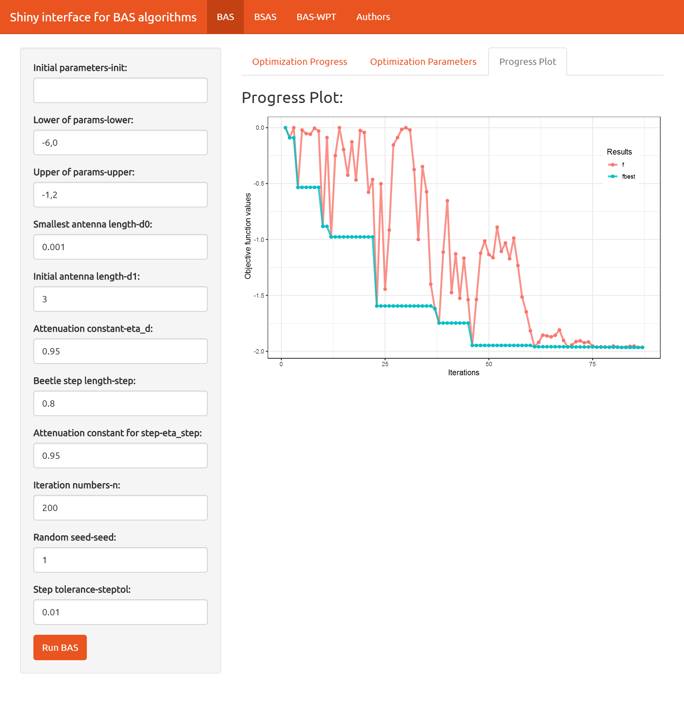

rBAS 
An R module aimed at implementation of Beetle Antennae Search (BAS) Algorithm and its mutations, for example, Beetle Swarm Antenae Search (BSAS) Algorithm.
Installation
rBAS is currently not on CRAN. You can install rBAS from Github with:
devtools::install_github("jywang2016/rBAS")Examples
Use help() to see the document pages about functions in rBAS.
library(rBAS) #load package
help(BASoptim)
help(BSASoptim)Two typocal test functions are applied to validate the efficacy of BAS/BSAS algorithm
Michalewicz function

library(rBAS)
mich <- function(x){
y1 <- -sin(x[1])*(sin((x[1]^2)/pi))^20
y2 <- -sin(x[2])*(sin((2*x[2]^2)/pi))^20
return(y1+y2)
}test<-
BASoptim(fn = mich,
lower = c(-6,0), upper = c(-1,2),
seed = 1, n = 100,trace = F)
test$par
#> [1] -4.964687 1.575415
test$value
#> [1] -1.966817
summary(test$df)
#> Length Class Mode
#> x 174 -none- numeric
#> f 87 -none- numeric
#> xbest 174 -none- numeric
#> fbest 87 -none- numericGoldstein-Price function

gold <- function(x){
x1 <- x[1]
x2 <- x[2]
y1 <- 1 + (x1 + x2 + 1)^2*(19 - 14*x1+3*x1^2 - 14*x2 + 6*x1*x2 + 3*x2^2)
y2 <- 30 + (2*x1 -3*x2)^2*(18 - 32*x1 + 12*x1^2+48*x2-36*x1*x2 + 27*x2^2)
return(y1*y2)
}test<-
BASoptim(fn = gold,
lower = c(-2,-2), upper = c(2,2),
seed = NULL, n = 100,trace = F)
test$par
#> [1] 0.001870855 -0.996496153
test$value
#> [1] 3.004756
summary(test$df)
#> Length Class Mode
#> x 174 -none- numeric
#> f 87 -none- numeric
#> xbest 174 -none- numeric
#> fbest 87 -none- numericBSAS algorithm
In order to save space, the BSAS algorithm code is executed with trace as FALSE because of too much trace information. You can set trace to TRUE and observe the trace messages.
test<-
BSASoptim(fn = mich,
lower = c(-6,0), upper = c(-1,2),
seed = 12, n = 100,k=5,
trace = F)
test$par
#> [1] -4.968610 1.557598
test$value
#> [1] -1.960214
summary(test$df)
#> Length Class Mode
#> x 202 -none- numeric
#> f 101 -none- numerictest<-
BSASoptim(fn = gold,
lower = c(-2,-2), upper = c(2,2),
seed = 11, n = 100,k=2,
trace = F)
test$par
#> [1] 0.0113079 -0.9948412
test$value
#> [1] 3.030877
summary(test$df)
#> Length Class Mode
#> x 202 -none- numeric
#> f 101 -none- numericShiny interface
After rBAS 0.1.0, shiny interface is added into rBAS. Now, the users only need to define their objective problems in R code. And the rest of paramsters in BASoptim or BSASoptim functions can be adjust in the shiny interface.
For example, Michalewicz function can be imported to shiny with united theme as follows,
run_BAS_App(func = mich, theme = 'united')
The theme argument is used to provides Bootstrap themes for shiny. More details can be found in shinythemes. Or you can use help(run_BAS_App) to check which themes you can choose.
To do list
Algorithm:
add implement of BSAS algorithmadd BAS-WPT(without parameter tuning)(Xiangyuan Jiang)- add binary BAS algorithm (Yue Yaun)
- add second-order BAS algorithm (Xiaoxiao Li)
- add BSO(Beetle Swarm Optimizaiton) (Tiantian Wang)
- …
Application:
- constrained optimization:
- multi-bar mechanism optimization
- system identification for building (resistance-capacity model)
- assembly path planning
- lot-sizing problems(binary BAS)
- tests
- tests for more than 20 benchmark functions
UI interface:
- basic interface
add basic shiny graphical interfaceupload constraints.txt
- automatic report generation
- report generation based on rmarkdown
- report download
You can list your requirements in the issues. Furthermore, if you have a good idea or codes about BAS’s mutations, pull requests and discussions are welcome. Contact me by email: jywang_2016@hust.edu.cn
Citation
citation(package = 'rBAS')
#>
#> To cite package 'rBAS' in publications use:
#>
#> Jiangyu Wang, Shuai Li and Xiangyuan Jiang (2018). rBAS:
#> Implementation of the BAS algorithm and its mutation. R package
#> version 0.1.5. https://github.com/jywang2016/rBAS
#>
#> A BibTeX entry for LaTeX users is
#>
#> @Manual{,
#> title = {rBAS: Implementation of the BAS algorithm and its mutation},
#> author = {Jiangyu Wang and Shuai Li and Xiangyuan Jiang},
#> year = {2018},
#> note = {R package version 0.1.5},
#> url = {https://github.com/jywang2016/rBAS},
#> }References
BSAS
J. Y. Wang, and H. X. Chen, “BSAS: Beetle Swarm Antennae Search Algorithm for Optimization Problems,” arXiv:1807.10470v1. If you want to find materials in Chinese about BSAS, please click here.